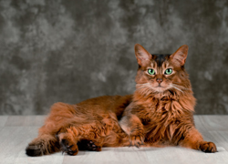
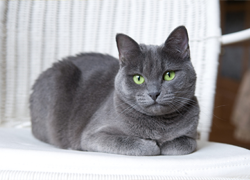
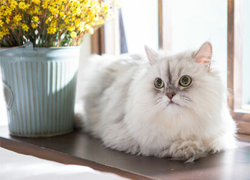

Razas
El gato doméstico, llamado más comúnmente gato, y de forma coloquial minino, michino o michi, es un mamífero carnívoro de la familia Felidae. Es una subespecie domesticada por la convivencia con el ser humano. Estos son algunos de los más conocidos.

Somalí
El gato somalí es una variante con pelo semilargo del abisinio. Es de origen africano.
 Apapachable
Apapachable

Bombay
El gato Bombay es el resultado del cruzamiento entre el Burmés y el American shorthair.
Dormilón

Azul ruso
El azul ruso es una de las razas más antiguas del mundo. Son de pelo corto plateado.
Confiable

Persa
El Persa tiene cara ancha y plana y abundante pelaje. Son considerados aristocráticos.
Cariñoso